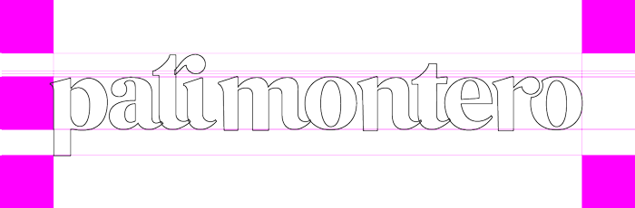

Intro #
For you to understand why and how. For me, to remember.
My name is Patricia Montero. Well, it's Patricia Carolina Montero Pachano. I know, it takes ages to say it out loud. So, I've shortened to Pati Montero, for I like it when people call me Pati. And also, because of that gorgeous Spanish actress whose name is the same as mine ;)
I use my brand signature as a single word, in lowercase, with a non-breaking space between the name and last name. It can also be the first name only.
Logo #
I found the inspiration for my logo from Georgia, one of my favourite typefaces.
Openness
I've recently embraced accessibility, and it soon became one of my core beliefs as a designer. I hope that everyone feels welcome around my work regardless of their abilities.
Curiosity
Always learning, I stay motivated towards a new idea or project. I intend to keep pace with the endless evolution of web design.
Happiness
I cherish the life I have, and I try to express that in my work.
Simplicity
I tend to over-complicate things, yet I always end up seeing that simpler is better.
Colour palette#
Although this design system is open to anyone, I'm building it having creative people in mind. It may be useful for web designers, developers and user experience designers.
To keep this exercise focused, I created these personas: